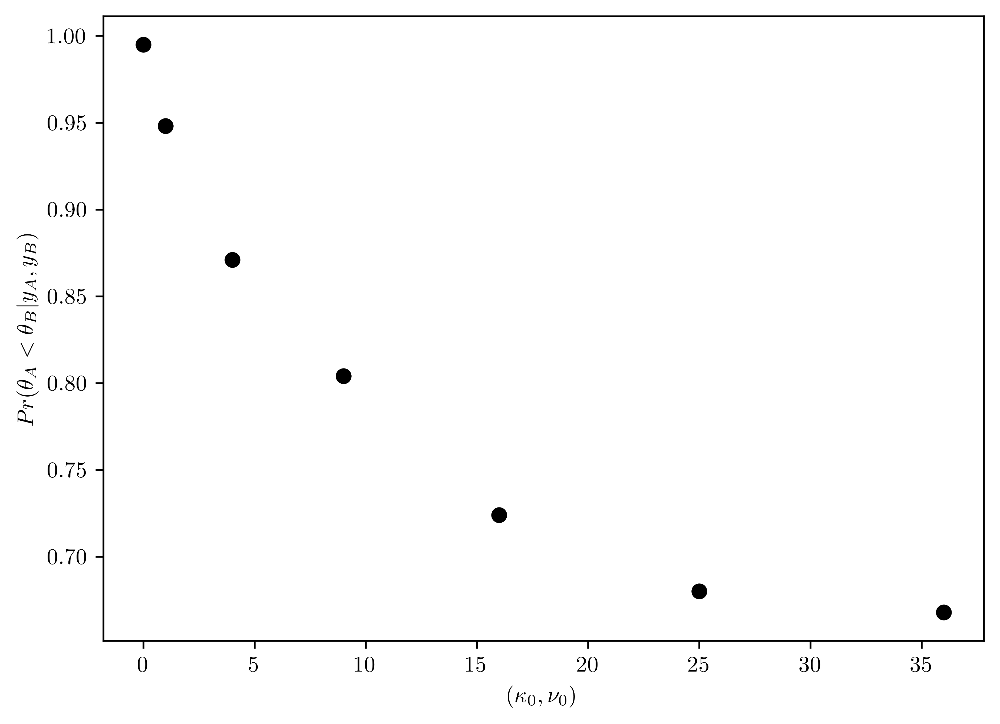

%matplotlib inline
import sys # system information
import matplotlib # plotting
import scipy # scientific computing
import random
import pandas as pd # data managing
from scipy.special import comb
from scipy import stats as st
from scipy.special import gamma
import numpy as np
import matplotlib.pyplot as plt
from itertools import permutations
# Matplotlib setting
plt.rcParams['text.usetex'] = True
matplotlib.rcParams['figure.dpi']= 300
np.random.seed(20220928) # Consistent random effect9 Homework 5
9.1 Description
- Course: STAT638, 2022 Fall
Read Chapter 5 in the Hoff book.
Then, do the following exercises in Hoff: 5.1, 5.2, 5.5.
For 5.2, _A denotes the mean exam score for students assigned to method A, and _B denotes the mean exam score for students assigned to method B.
Be careful: Some of the notation differs between the lecture slides and the Hoff book.
- Deadline:
Oct 12 by 12:01pm
9.2 Computational Enviromnent Setup
9.2.1 Third-party libraries
9.2.2 Version
print(sys.version)
print(matplotlib.__version__)
print(scipy.__version__)
print(np.__version__)
print(pd.__version__)3.9.12 (main, Apr 5 2022, 01:52:34)
[Clang 12.0.0 ]
3.6.2
1.9.3
1.23.4
1.5.19.3 Problem 5.1
Studying: The files
school1.dat,school2.datandschool3.datcontina data on the amount of time students from \(3\) high schools spent on studying or homework during an exam period. Analyze data from each of these schools separately, using the normal model with a conjugate prior distribution, in which \(\{\mu_0=5, \sigma^{2}_{0}=4, \kappa_0 = 1, \nu_0 = 2\}\) and compute or approximate following:
schs = [np.loadtxt("data/school{}.dat".format(i)) for i in range(1,4)]9.3.1 (a)
Posterior means and \(95\%\) confidence intervals for the mean \(\theta\) and standard deviation \(\sigma\) from each school;
class NormalModel:
def __init__(self, data, mu0, var0, k0, v0):
# Prior
self.mu0 = mu0 # prior mean
self.var0= var0 # prior variance
self.k0= k0 # prior observation
self.v0 = v0
# Data
self.data = data
self.mean = np.mean(data) # sample mean
self.n = len(data) # sample counts
self.kn = self.n + self.k0
self.s2 = np.sum( (self.data- self.mean)**2 ) / (self.n - 1)
# Posterior parameters
self.vn = self.get_vn(self.v0, self.n) # Posterior v
self.varn = self.get_varn(self.vn, self.v0, self.var0, self.k0, self.n, self.kn, self.mean, self.mu0) # Posterior variance
self.mun = self.get_mun(self.k0, self.mu0, self.n, self.mean, self.kn) # Posterior mean
def get_vn(self, v0, n):
return v0 + n
def get_varn(self, vn, v0, var0, k0, n, kn, mean, mu0):
varn = (1/vn)*(v0*var0 + (n-1)*self.s2 + (k0*n/kn)*(mean - mu0)**2)
return varn
def get_mun(self, k0, mu0, n, mean, kn):
return (k0*mu0 + n*mean)/kn
def rv_theta_post(self):
mu0 = self.mu0; k0 = self.k0;
return st.norm(loc=self.mun, scale= np.sqrt(self.varn/self.kn))
def rv_pred(self):
mun = self.mun
varn = self.varn
return st.norm(loc=self.mun, scale= np.sqrt(self.varn))
setting = {"mu0": 5, "var0":4, "k0":1, "v0":2}
nms = [NormalModel(sch, **setting) for sch in schs]
rv_thps = [nm.rv_theta_post() for nm in nms]
# Display data
pd.DataFrame({"School":[i+1 for i in range(0, len(nms))],"Mean":[rv_thp.mean() for rv_thp in rv_thps],"95% confidence interval (left, right)":[rv_thp.interval(0.95) for rv_thp in rv_thps]})| School | Mean | 95% confidence interval (left, right) | |
|---|---|---|---|
| 0 | 1 | 9.292308 | (7.832422909482735, 10.752192475132652) |
| 1 | 2 | 6.948750 | (5.242990325564609, 8.654509674435392) |
| 2 | 3 | 7.812381 | (6.26475553664974, 9.360006368112167) |
9.3.2 (b)
The posterior probability that \(\theta_i < \theta_j < \theta_k\) for all size permutataions \(\{i,j,k\}\) of \(\{1,2,3\}\);
n_mc = 10000
samps_thp = [rv_thp.rvs(size=n_mc) for rv_thp in rv_thps]
perm = list(permutations([0,1,2]))
text = [""] * len(perm)
probs = [int] * len(perm)
for (a, i) in enumerate(perm):
text[a] = "theta_{} < theta_{} < theta_{}".format(i[0]+1, i[1]+1, i[2]+1)
probs[a] = np.sum(np.logical_and(samps_thp[i[0]] < samps_thp[i[1]], samps_thp[i[1]] < samps_thp[i[2]])) / n_mc
pd.DataFrame({"Permuatations": text, "Probabilities": probs})| Permuatations | Probabilities | |
|---|---|---|
| 0 | theta_1 < theta_2 < theta_3 | 0.0058 |
| 1 | theta_1 < theta_3 < theta_2 | 0.0030 |
| 2 | theta_2 < theta_1 < theta_3 | 0.0788 |
| 3 | theta_2 < theta_3 < theta_1 | 0.6929 |
| 4 | theta_3 < theta_1 < theta_2 | 0.0123 |
| 5 | theta_3 < theta_2 < theta_1 | 0.2072 |
9.3.3 (c)
The posterior probability that \(\tilde{Y}_i<\tilde{Y}_j < \tilde{Y}_k\) for all siz permuatations \(\{i,j,k\}\) of \(\{1,2,3\}\), where \(\tilde{Y}_i\) is a sample from the posterior predictive distribution of school \(i\).
rv_posts = [nm.rv_pred() for nm in nms]
samps_post = [rv_post.rvs(size=n_mc) for rv_post in rv_posts]
perm = list(permutations([0,1,2]))
text = [""] * len(perm)
probs = [int] * len(perm)
for (a, i) in enumerate(perm):
text[a] = "Y_tilde_{} < Y_tilde_{} < Y_tilde_{}".format(i[0]+1, i[1]+1, i[2]+1)
probs[a] = np.sum(np.logical_and(samps_post[i[0]] < samps_post[i[1]], samps_post[i[1]] < samps_post[i[2]])) / n_mc
pd.DataFrame({"Permuatations": text, "Probabilities": probs})| Permuatations | Probabilities | |
|---|---|---|
| 0 | Y_tilde_1 < Y_tilde_2 < Y_tilde_3 | 0.1020 |
| 1 | Y_tilde_1 < Y_tilde_3 < Y_tilde_2 | 0.1029 |
| 2 | Y_tilde_2 < Y_tilde_1 < Y_tilde_3 | 0.1857 |
| 3 | Y_tilde_2 < Y_tilde_3 < Y_tilde_1 | 0.2686 |
| 4 | Y_tilde_3 < Y_tilde_1 < Y_tilde_2 | 0.1361 |
| 5 | Y_tilde_3 < Y_tilde_2 < Y_tilde_1 | 0.2047 |
9.3.4 (d)
Compute the posterior probability that \(\theta_1\) is bigger than both \(\theta_2\) and \(\theta_3\), and the posterior probability that \(\tilde{Y}_1\) is bigger than both \(\tilde{Y}_2\) and \(\tilde{Y}_3\).
th_biggest = np.sum(np.logical_and(samps_thp[0]>samps_thp[1], samps_thp[0]>samps_thp[2]))/n_mc
post_biggest = np.sum(np.logical_and(samps_post[0]>samps_post[1], samps_post[0]>samps_post[2]))/n_mc
pd.DataFrame({"Properties": ["Theta_1 is the biggest", "Tilde_1 is the biggest"], "Probabilities":[th_biggest, post_biggest]})| Properties | Probabilities | |
|---|---|---|
| 0 | Theta_1 is the biggest | 0.9001 |
| 1 | Tilde_1 is the biggest | 0.4733 |
9.4 Problem 5.2
Sensitivity analysis: \(32\) students in a science classroom were randomly assigned to one of two study methods, \(A\) and \(B\), so that \(n_A = n_B = 16\) students were assigned to each method. After several weeks of study, students were examined on the course material with an exam designed to give an average score of \(75\) with a standard deviation of \(10\). The scores for the two groups are summarized by \(\{\bar{y}_A=75.2, s_A = 7.3\}\) and \(\{\bar{y}_B=77.5, s_b = 8.1\}\). Consider independent, conjugate normal prior distributions for each of \(\theta_A\) and \(\theta_B\), with \(\mu_0=75\) and \(\sigma_{0}^2 = 100\) for both groups. For each \((\kappa_0, \nu_0) \in \{(1,1),(2,2), (4,4),(8,8), (16,16), (32,32)\}\) (or more values), obtain \(Pr(\theta_A < \theta_B | y_A, y_B)\) via Monte Carlo Sampling. Plot this probability as a function of \(\kappa_0 = \nu_0\). Describe how you might use this plot to convey the evidence that \(\theta_A < \theta_B\) to people of a variety of prior opinions.
- Increase \((\kappa_0, \nu_0)\) can descrease the probability of \(B\) bigger that than \(A\). But, the probability of \(B\) larger than \(A\) can hardly lower than \(0.5\).
class NormalModel:
def __init__(self, sample_size,sample_mean, sample_var, mu0, var0, k0, v0):
# Prior
self.mu0 = mu0 # prior mean
self.var0= var0 # prior variance
self.k0= k0 # prior observation
self.v0 = v0
# Data
self.mean = sample_mean # sample mean
self.n = sample_size # sample counts
self.kn = self.n + self.k0
self.s2 = sample_var
# Posterior parameters
self.vn = self.get_vn(self.v0, self.n) # Posterior v
self.varn = self.get_varn(self.vn, self.v0, self.var0, self.k0, self.n, self.kn, self.mean, self.mu0) # Posterior variance
self.mun = self.get_mun(self.k0, self.mu0, self.n, self.mean, self.kn) # Posterior mean
def get_vn(self, v0, n):
return v0 + n
def get_varn(self, vn, v0, var0, k0, n, kn, mean, mu0):
varn = (1/vn)*(v0*var0 + (n-1)*self.s2 + (k0*n/kn)*(mean - mu0)**2)
return varn
def get_mun(self, k0, mu0, n, mean, kn):
return (k0*mu0 + n*mean)/kn
def rv_theta_post(self):
mu0 = self.mu0; k0 = self.k0;
return st.norm(loc=self.mun, scale= np.sqrt(self.varn/self.kn))
def rv_pred(self):
mun = self.mun
varn = self.varn
return st.norm(loc=self.mun, scale= np.sqrt(self.varn))
def expAB(k0,v0,size=1000):
setting = {"sample_size":16, "mu0": 75, "var0": 100, "k0":k0, "v0":v0}
rvtA = NormalModel(sample_mean=75.2,\
sample_var=7.3, **setting).rv_theta_post()
rvtB = NormalModel(sample_mean=77.5,\
sample_var=8.1, **setting).rv_theta_post()
spA, spB = rvtA.rvs(size=size), rvtB.rvs(size=size)
return np.sum(spA < spB)/size
pars = [i**2 for i in range(0, 7)]
vals = [float]*len(pars)
for (i, p) in enumerate(pars):
vals[i] = expAB(p,p)
# Plotting
figV, axV = plt.subplots()
axV.plot(pars,vals, 'o', color="k")
axV.set_xlabel("$(\\kappa_0, \\nu_0)$")
axV.set_ylabel("$Pr(\\theta_A < \\theta_B | y_A, y_B)$");
9.5 Problem 5.5
Unit information prior: Obtain a unit information prior for the normal model as follows:
9.5.1 (a)
Reparameterize the normal model as \(p(y|\theta, \psi)\), where \(\psi=\frac{1}{\sigma^2}\). Write out the log likelihood \(l(\theta, \psi|y) = \sum \log p(y_i|\theta, \psi)\) in terms of \(\theta\) and \(\psi\).
\[p(y|\theta,\sigma^2) = \frac{1}{\sqrt{2\pi\sigma^2}}e^{-\frac{1}{2}(\frac{y-\theta}{\sigma})^2}\]
\[p(y|\theta, \psi) = \frac{\sqrt{\psi}}{\sqrt{2\pi}}e^{-\frac{1}{2}(y-\theta)^2\psi}\]
\[\log p(y_i|\theta,\psi) = \log\left(\sqrt{\frac{\psi}{2\pi}}\right) - \frac{1}{2}(y_i -\theta)^2\psi\]
\[\begin{align} l(\theta,\psi|y) = \sum_{i=1}^{n} \log(y_i|\theta, \psi)% &= \log\left(\frac{\psi}{2\pi}\right)^{n/2} - \frac{1}{2}\psi \sum_{i=1}^{n}(y_i -\theta)^2\\ &= \frac{n}{2} \log\left( \frac{\psi}{2\pi} \right) - \frac{\psi}{2}\sum^{n}_{i=1}(y_i - \theta)^2\\ &= \frac{n}{2} \log\left( \frac{\psi}{2\pi} \right) - \frac{\psi}{2}\sum^{n}_{i=1}(y_{i}^{2} - 2\theta y_{i} + \theta^2)\\ &= \frac{n}{2} \log\left( \frac{\psi}{2\pi} \right) - \frac{\psi}{2}(\sum y_{i}^{2} - 2\theta\sum y_{i} + n\theta^2)\\ &= \frac{-\psi}{2} \sum_{i=1}^{n} y_{i}^{2} + \psi\theta\sum_{i=1}^{n} y_i - \frac{n\psi\theta^2}{2} + \frac{n}{2} \log\left( \frac{\psi}{2\pi} \right) \end{align}\]
9.5.2 (b)
Find a probability density \(P_U(\theta, \psi)\) so that \(\log p_U(\theta, \psi) = \frac{l(\theta, \psi |y)}{n} + c\), where \(c\) is a constant that does not depend on \(\theta\) or \(\psi\).
Hint: Write \(\sum (y_i-\theta)^2\) as \(\sum(y_i - \bar{y} + \bar{y} - \theta)^2 = \sum(y_i-\bar{y})^2 + n(\theta - \bar{y})^2\), and recall that \(\log p_U(\theta, \psi) = \log p_U(\theta|\psi) + \log p_U(\psi)\).
\[\begin{align} l(\theta, \psi|y)% &=\frac{n}{2} \log\left( \frac{\psi}{2\pi} \right) - \frac{\psi}{2}\sum^{n}_{i=1}(y_i - \theta)^2\\ &=\frac{n}{2}\log\left(\frac{\psi}{2\pi}\right) - \frac{\psi}{2}\left[\sum(y_i - \bar{y})^2 + n(\theta-\bar{y})^2\right]\\ &=\frac{n}{2}\log\left(\frac{\psi}{2\pi}\right) - \frac{\psi}{2}\left[(n-1) s^2 + n(\theta-\bar{y})^2\right]\\ &= \frac{n}{2}\log\left(\frac{\psi}{2\pi}\right) - \frac{\psi}{2}\left((n-1)s^2 + n\theta^2 - 2n\theta\bar{y} + n\bar{y}^2\right)\\ &= \frac{n}{2}\log\left(\frac{\psi}{2\pi}\right) - \frac{\psi}{2}(n-1)s^2 - \frac{\psi n \theta^2}{2} + n\psi\theta\bar{y} - \frac{\psi n \bar{y}^2}{2}\\ &= \frac{n}{2}\log\left(\frac{\psi}{2\pi}\right) - \frac{\psi}{2}(n-1)s^2 - \frac{\psi n \bar{y}^2}{2} + n\psi\theta\bar{y} - \frac{\psi n \theta^2}{2} \end{align}\]
\[\begin{align} \frac{l(\theta, \psi|y)}{n} + c &= \underbrace{\frac{1}{2}\log\left(\frac{\psi}{2\pi}\right) - \frac{\psi}{2n}(n-1)s^2 - \frac{\psi \bar{y}^2}{2}}_{=h(\psi|y)} + \underbrace{\psi\theta\bar{y} - \frac{\psi\theta^2}{2}}_{=g(\theta|\psi, y)} + c \end{align}\]
\[\begin{align} p_U(\theta,\psi)% &= \exp\left(\frac{l(\theta,\psi|y)}{n}+ c\right)\\ &\propto \exp\left(\frac{l(\theta,\psi|y)}{n}\right)\\ &= \exp(h(\psi|y)) \exp(g(\theta|\psi,y)) \end{align}\]
\[\begin{align} \exp(h(\psi|y))% &= (\frac{\psi}{2\pi})^{1/2}\exp\left(- (\frac{(n-1)s^2}{2n} + \frac{\bar{y}^2}{2})\psi\right)\\ &\propto \psi^{\frac{1}{2}}\exp\left(- \frac{\psi}{(\frac{(n-1)s^2}{2n} + \frac{\bar{y}^2}{2})^{-1}}\right)\\ &\sim Gamma(\psi, \frac{3}{2}, (\frac{(n-1)s^2}{2n} + \frac{\bar{y}^2}{2})^{-1}) \end{align}\]
\[\begin{align} \exp(g(\theta|\psi, y))% &= \exp\left( \psi\theta\bar{y} - \frac{\psi\theta^2}{2}\right)\\ &= \exp\left( -\frac{\psi}{2}\theta^2 + \psi\bar{y}\theta - \frac{\psi\bar{y}^2}{2} + \frac{\psi\bar{y}^2}{2} \right)\\ &= \exp\left( -\frac{\psi}{2}(\theta^2 - 2\bar{y}\theta + \bar{y}^2) + \frac{\psi\bar{y}^2}{2}\right)\\ &= \exp\left( -\frac{\psi}{2} (\theta-\bar{y})^2 + \frac{\psi\bar{y}^2}{2}\right)\\ &\propto \exp\left( -\frac{\psi}{2} (\theta-\bar{y})^2 \right)\\ &= \exp\left( - \frac{1}{2}\left(\frac{\theta-\bar{y}}{\psi^{-1/2}} \right)^2\right)\\ &\propto Normal(\theta, \bar{y}, \psi^{-1/2}) \end{align}\]
Thus1,
\[\begin{align} P_{U}(\theta,\psi) &= P_{U}(\theta|\psi)P_{U}(\psi) \propto Gamma(\psi, \frac{3}{2}, (\frac{(n-1)s^2}{2n} + \frac{\bar{y}^2}{2})^{-1})\\ &\times Normal(\theta, \bar{y}, \psi^{-1/2})\\ \end{align}\]
9.5.3 (c)
Find a probability density \(p_U(\theta, \psi|y)\) that is proportional to \(p_U(\theta, \psi) \times p(y_1, \dots, y_n |\theta, \psi)\). It may be convenient to write this joint density as \(p_U(\theta|\psi, y)\times p_{U}(\psi|y)\). Can this joint density be considered a posterior density?
\[\begin{align} P_{U}(\theta, \psi|y)% &= P_{U}(\psi|y) \times p_{U}(\theta|\psi, y)\\ &= Gamma(\psi, \frac{3}{2}, (\frac{(n-1)s^2}{2n} + \frac{\bar{y}^2}{2})^{-1})\\ &\times Normal(\theta, \bar{y}, \psi^{-1/2})\\ &\propto \psi^{1/2}\exp\left( - (\frac{(n-1)s^2}{2n} + \frac{\bar{y}^2}{2})\psi \right)\times \exp\left(-\frac{1}{2}\left(\frac{\theta-\bar{y}}{\psi^{-1/2}}\right)^2\right)\\ &\propto \psi^{1/2}\exp\left( - (\frac{(n-1)s^2}{2n} + \frac{\bar{y}^2}{2})\psi \right)\times \exp\left(-\frac{\psi}{2}\left(\theta-\bar{y}\right)^2\right)\\ &\propto \psi^{1/2}\exp\left( - (\frac{(n-1)s^2}{2n} + \frac{\bar{y}^2}{2})\psi \right)\times \exp\left(-\frac{\psi}{2}\left(\theta^2-2\theta\bar{y}+\bar{y}^2\right)\right)\\ &\psi^{1/2}\exp\left(-\left( \frac{(n-1)s^2}{2n} + \frac{\bar{y}^2}{2} + \frac{\bar{y}^2}{2} \right)\psi \right) \times \exp\left(-\frac{\psi}{2}(\theta^2-2\theta\bar{y})\right) \end{align}\]
- \(p_U(\theta|\psi, y) \propto Normal(\theta, \bar{y}, \psi^{-1/2})\)
- \(p_U(\psi|\theta, y) \sim Gamma(\frac{3}{2}, (\frac{(n-1)s^2}{2n} + \frac{\bar{y}^2}{2})^{-1})\)
- Yes, it can be considered as a posterior density because the unit information prior is the product of two proper distribution.